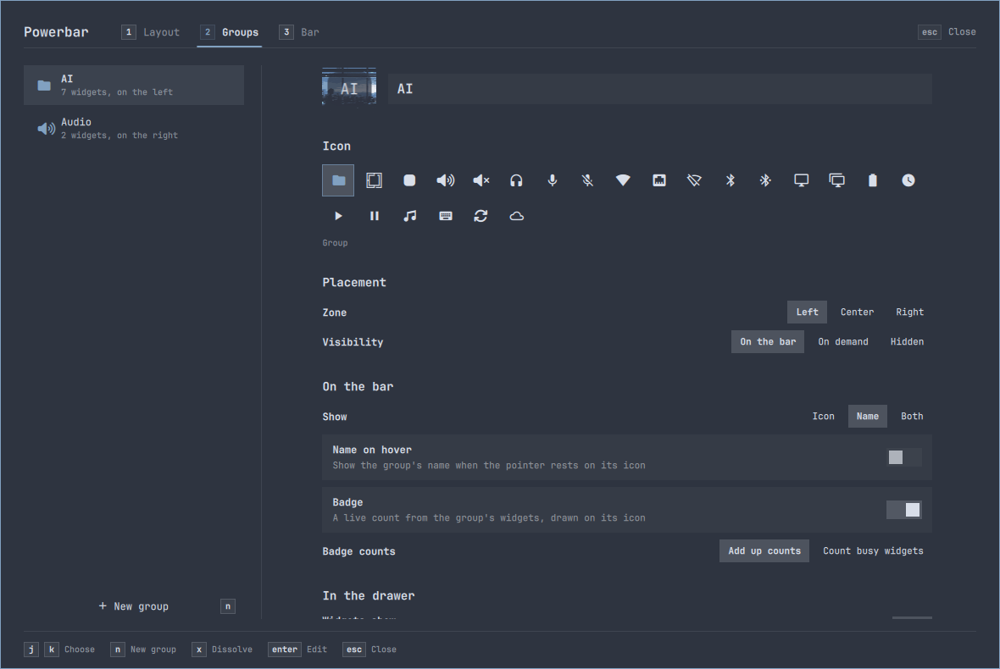
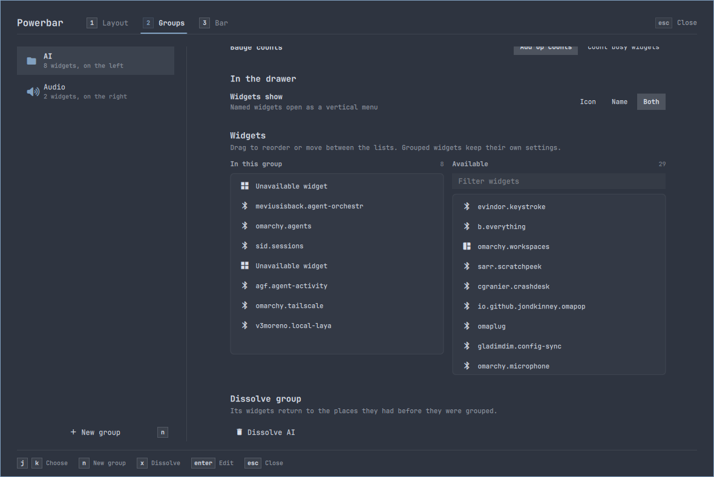

Groups is the last Preferences page in the old language. A 260 px list sits beside a form 1,227 px tall in a 654 px view, so the widgets in a group only come into view after 453 px of scrolling. The icon is one of 23 stock glyphs. The proposal makes it a bento page like Layout and Bar: a shelf of your groups drawn as the bar draws them, the selected group's settings in one tile, and its drawer drawn exactly as it opens, beside the widgets you can add. The icon well opens a picker that searches about 2,170 icons: the glyphs your widgets draw, the icons Omarchy uses, and Omarchy's emoji. You can also drop or paste your own. Everything here uses your groups, captures, theme and wallpaper.
Click into the window and use it: h/l walk the groups, Tab jumps tiles, Enter on the icon opens the picker, n makes a group, x twice dissolves one. Widgets drag between the drawer and the list. Nothing here touches your bar.
Group shelf ships, built on branch groups-shelf. The user asked for the real page to be symmetrical and evenly spaced; the "Built" rows record how. The interactive mock above still shows the first draft (drawer 7 + list 5); Today and List tile stay as the record of what was weighed.
| Part | Proposal |
|---|
Read from GroupsPreferences.qml, IconGrid.qml and Bar.qml, and measured offscreen with your shell.json (docs/rendering-bench, 1180 × 790 card, 1124 × 654 page, dpr 1.6). Each line is what the code does.
| What | Where | Evidence |
|---|
Today's page rendered offscreen: as it opens (left) and scrolled to the widgets (right). Plugins don't run offscreen and the bench used its own cached theme, so names and colours differ from yours; the structure is what matters.


Nothing new in the page language: the Bar page's tiles, Layout's shelf cursor and its bar drawing. Two things are new. The drawer is drawn as it opens, because Preferences closes it. The icon picker is a searchable popover.
Why a shelf, not a list. A group is a thing on your bar. The shelf draws each group the way the bar draws it: its island, its slot from CellModel, its face (icon, name or both) in the bar's font at 1:1. With a line under it, you recognise a group the way you see it on screen, and the 260 px list column goes back to the settings.
Why the drawer is drawn. Preferences closes every drawer when it opens, so the drawer is the one part of a group you can't see while you edit it. "Widgets show" changes how it opens (a strip of icons, or a menu of names). Drawn exactly as the bar draws it, the drawer is both the member list and the picture of that setting. That follows the rule from the Bar and Layout pages: draw only what is not already on screen, and draw it exactly.
Why a popover picker. An icon is chosen once per group. Today's always-open grid takes 150 px of the page for 23 glyphs. The popover takes no room until Enter or a click, and then has the room for search and 2,170 icons.
Working on the real icon set from this machine. Type to search; arrows walk; Enter chooses; Tab changes the source; Esc clears the search, then closes. Drop an SVG or PNG on "Your own", or paste one (Ctrl+V), or paste any glyph or emoji into the search.
| Source | Icons | Read from |
|---|
Omarchy has no written icon guideline. What it does is consistent: the 284 glyphs its shell, menus and configs use are 58% Material Design, then Font Awesome. Following that keeps every group icon in the desktop's own style. The full Nerd Font (10,610 glyphs) is left out on purpose.
| Query | Matches | First results, in order | Time |
|---|
The same groups and the same measurements for each, at your window size. List tile keeps today's list as a tile, for comparison.
The Layout page's model: each tile a Tab stop, one cursor per composite control, j/k walking the page at its edges. The footer lists the keys for whatever has focus.
| Where | Keys | What happens |
|---|
Each one drawn with the same code as the mock above.
Groups is opened now and then; a visit is a few edits. Motion stays short, and with Animations off every change still shows as a fill, an outline or a position.
| Change | Animations on | Animations off |
|---|
In the order it can land. Each step leaves Preferences working.
The references this proposal borrows from, and the part each one contributed.